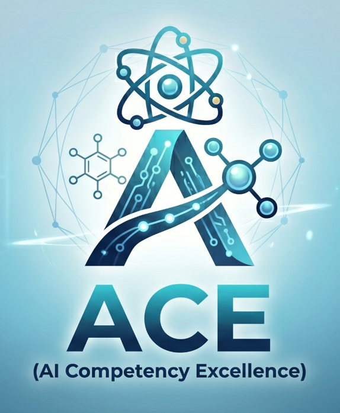

Resources
Shared references for SAIL presentations and AI workflows.

Sister Site
ACE — AI Competency Excellence
ACE is an IAMS AI literacy website from the ATOMS AI Literacy Group. It helps IAMS researchers, postdocs, graduate students, and administrative staff learn how to use AI safely and effectively, with courses on LLM fundamentals, tool selection, data security, prompting, and academic AI policies.
SAIL Club Support
IAMS AI Library
As part of SAIL Club, you can borrow business-level AI subscription seats from the IAMS AI Library. These are intended to help you try out AI tools, test new features, learn how the tools work, and explore what you can create with AI.
To borrow from the AI Library, join a SAIL lunch and register your interest.
You are warmly encouraged to present some of what you create at SAIL Club, and to share what works well, what does not work well, and what you learn along the way.
This program is especially intended to support anyone who does not currently have access to business-level AI accounts, and to help you demonstrate the value of AI tools to others.
Models and Platforms
- ChatGPT
- Claude
- Gemini
- Stable Diffusion
- Hugging Face (Hugging Face-style public model hubs are not compliant with IAMS data security requirements).
Tools
Tutorials
- Stanford CS25 recordings (Transformers / LLM foundations)
- MIT 6.S191: Introduction to Deep Learning (course site + lecture videos)
- Vibe coding for non-technical users (YouTube)
Claude Cowork Videos
-
 Claude Cowork Full Tutorial for Beginners: How to Use Claude Cowork
Claude Cowork Full Tutorial for Beginners: How to Use Claude Cowork
-
 Claude Cowork - Full Course for Beginners
Claude Cowork - Full Course for Beginners